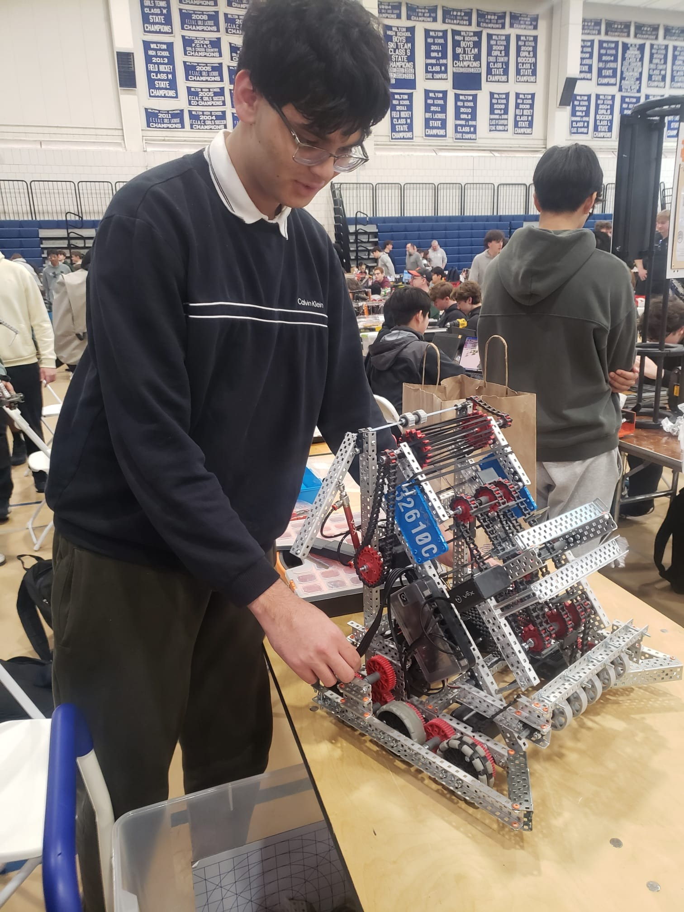
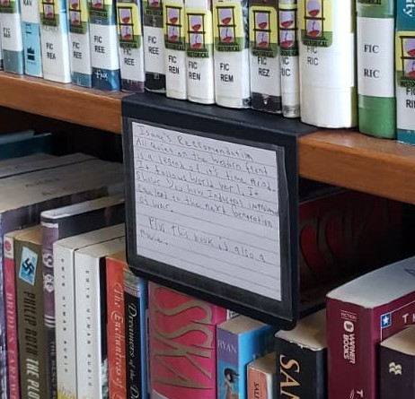
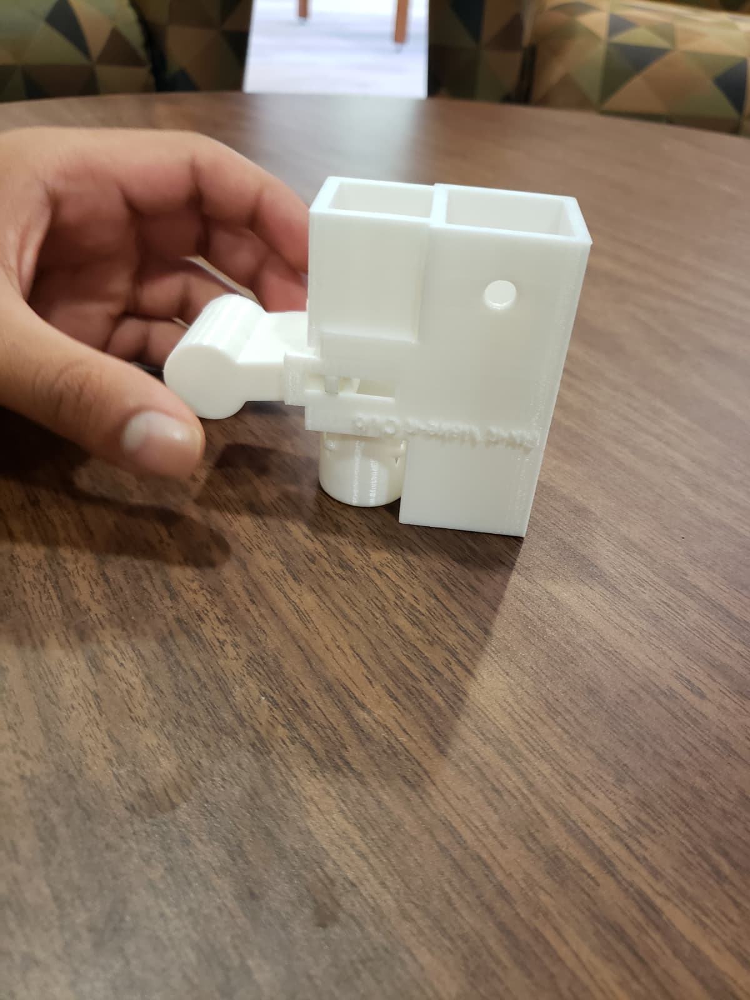
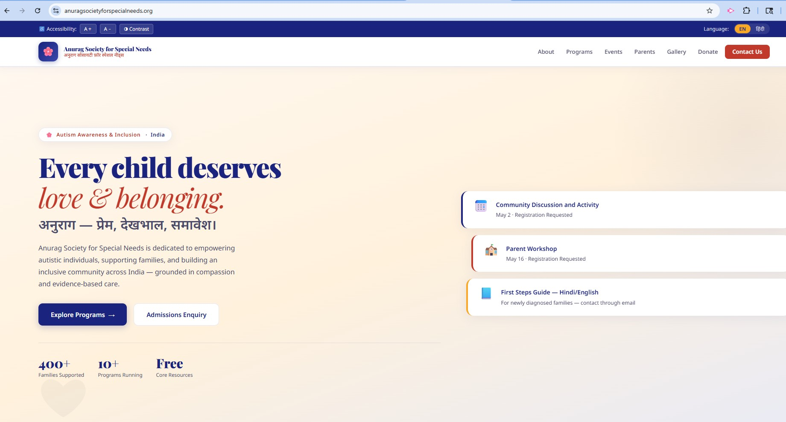

Robotics Mechanical Lead — VEX V5
I lead Avon High School’s first‑ever VEX V5 team (32610C Falconbots). In our debut year, we qualified for the Worlds 2025 (22nd position) and 2026 (ongoing) in State Championship for a brand‑new team.
Aspiring Mechanical Engineer • Robotics Leader • STEM Researcher • Community Builder • NHS Member

I’m a Junior at Avon High School in Connecticut, where I’ve shaped my academic journey around engineering, physics, and computational thinking. With a 4.18 weighted GPA and ten consecutive honor‑roll semesters, I’ve built a strong foundation for Mechanical Engineering. My growth comes from what I build—robots, prototypes, research models, and community programs.
I lead Avon High School’s first‑ever VEX V5 team (32610C Falconbots). In our debut year, we qualified for the Worlds 2025 (22nd position) and 2026 (ongoing) in State Championship for a brand‑new team.

I founded FixItMakeIt to design and 3D‑print custom mechanical solutions for teachers, clubs, and students. I manage the full design‑to‑fabrication pipeline using CAD tools and rapid prototyping.

I led my VEX IQ team to 1st Place (Design) and 3rd Place (Teamwork) at States, earning a berth at the World Championship. I was recognized by the Superintendent for resilience and character.

Under Dr. Chang Liu, I worked on solving the Inverse Navier‑Stokes Equation using Physics‑Informed Neural Networks and Least Squares methods. This project combined fluid dynamics, calculus, and Python.

I lead youth‑driven science initiatives, manage budgets, and design public STEM exhibits as Executive Co‑Chair & Treasurer of the council . Earlier , I led teen innovation efforts by organizing collaborative STEM projects and turning student ideas into real, community‑impact actions — including a soil‑and‑rock water filtration model showcased at CSC. I also contributed to public‑facing STEM exhibits and youth engagement programs.


I built Skill Chain, an app that helps students track and build competencies, and submitted it to the Congressional App Challenge.

Designed and built an ergonomic pen and mobile holder alongside a precision‑balanced YoYo to explore complex revolving features and assembly constraints in Autodesk Inventor.


Created using Autodesk Inventor as part of Engineering Drafting & Design coursework with focus on geometric dimensioning and technical drawing standards.


Developed an interactive exhibit demonstrating sensory illusions for museum visitors during the CSC Innovate program.

As a Hindi USA youth teacher and mentor, I help younger students build confidence in reading, writing, and speaking Hindi. I support classroom activities, guide students during cultural events, and assist teachers with lesson preparation.
I also participated in cultural showcases, poetry recitations , and youth‑led community programs that celebrate Indian heritage and language—experiences that strengthened my leadership, teamwork, and public‑speaking skills - Winner in COLTS 2025 and 2026 Hindi Poetry category.


I support Anurag Society’s mission by assisting children with special needs during community events, learning sessions, and recreational activities. This work strengthened my empathy, patience, and commitment to inclusive education and motivated me to create the Society's website. anuragsocietyforspecialneeds.org

AP CSA, AP Calculus BC, AP Physics 1 & 2, AP Environmental Science, AP Lang, APUSH, AP CSP, Engineering Drafting & Design (H), Engineering for Robotics (H)

11th Position in Science Olympiad at UCONN 2026, AHS Math Team, MathCounts regional selection, Top 5% in AMC 8, Science Club, Achieved CT Biliteracy seal for Hindi Language.

Earned a black belt through years of disciplined martial arts training, demonstrating perseverance, physical conditioning, and mental focus.


Completed multiple Junior Ranger programs, exploring environmental stewardship, conservation, and national park ecosystems.


Competed as a JV cross‑country runner, building endurance, teamwork, and resilience through long‑distance training and meets.


Qualified for the Connecticut State GeoBee, demonstrating strong geographic knowledge and problem‑solving skills.

Recognized by the State of Connecticut for academic and community achievements.

Honored by the Indian Consulate for cultural engagement, academic excellence, and community leadership.

Email: saujaskant@gmail.com
LinkedIn: www.linkedin.com/in/saujaskant
GitHub: https://github.com/saujaskant